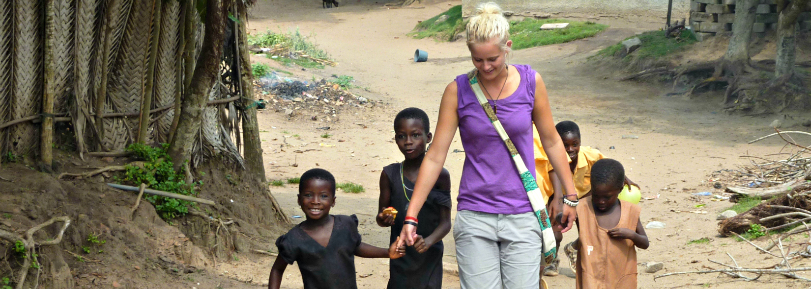
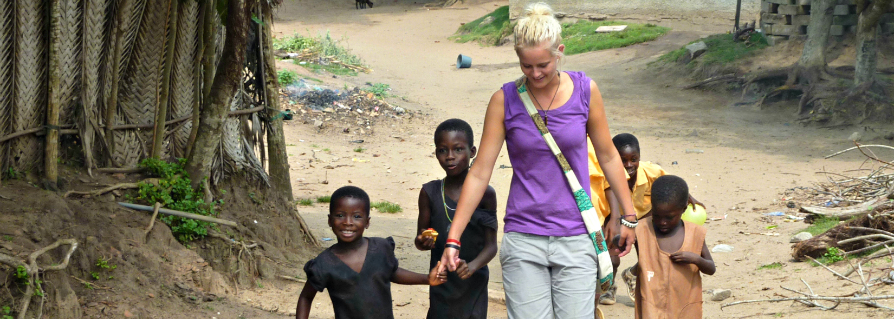
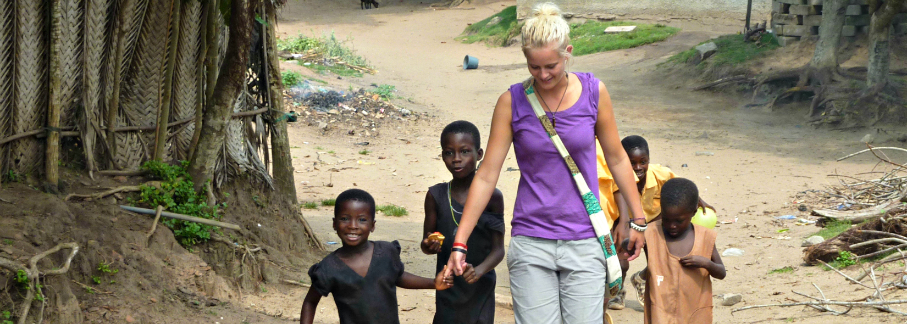

Help the World Bloom one Experience at a Time
You can transform lives for families
around the world. Every single
penny will help bring
clean food to communities in need.

You can transform lives for families
around the world. Every single
penny will help bring
clean food to communities in need.
There's a smart way to end the water crisis. People around the Democratic Republic of Congo could get access to safe water in their homes with the help of volunteers and donations.
Fast Facts:
World Water Crisis
An Incredible Fact:
More people die from lack of clean drinking water than from all forms of violence combined... including war!
(United Nations)
Illness & Disease
Fully half of the hospital beds worldwide are occupied by someone suffering from a water-related illness.
80% of all diseases are waterborne.
(World Health Organization)
* At present, 2.4 billion people have inadequate access to sanitation... with nearly a billion people practicing open defecation.
* About 750 million people have no access to safe drinking water. This is a travesty!
* Diarrhea is the leading cause of death for children under 5 worldwide.
Naturally, these figures are changing daily, and they have improved since we started doing this work (it was over 1.2 billion without clean water then). This is encouraging, and it shows that we can actually solve this problem with the means at hand. And yet, there is a lot of work still to be done. With around 80 million displaced people at any given moment (more than at any time in history)... and with massive, seemingly-endless conflicts raging in many places... and knowing that no census style infrastructure exists in much of the world... exact numbers of people suffering are fairly well impossible. What is not impossible, is alleviating the needless suffering.Solving water issues is not difficult, doesn't take any new technology, and is not expensive... it just takes desire.
Welcome to Water Project1, a 501(c)(3) nonprofit dedicated to helping people access clean drinking water. With our unique and extremely efficient method of operation, and an exemplary, transparent track record of sustainability, you will be hard pressed to find any charity, in any field, that can match our accomplishments. Water Project1 is partnered with Doctors Without Borders.
That's where our organization comes in. We are here to bring safe water to people in need. There is both a need and demand for this, because when people have access to safe water, they get the capability to take nourish themselves and their family. With your help, we will continue providing families with hope and health.
We often get asked, "What's the best way to help?" Our answer is simple: You don't have to fly to Africa to make a difference. In fact, the best way you can help is by staying right where you are. We need passionate people to spread awareness about the water crisis, then raise money to solve it. So roll up your sleeves and use that laptop you're holding. It's your most powerful tool.
Come to and join our cause by volunteering. Help out in our office, be a driver, help with deliveries and hang with other charity water supporters. Sign up to see where you fit in! JOIN US AS A VOLUNTEER
Tokyo is the capital of Japan.